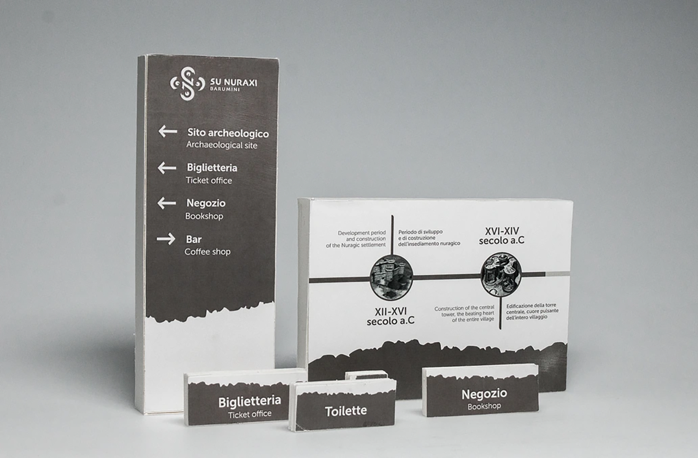

‘Non è surreale’ is a communication campaign
produced for the Civil Week targeting
individuals under 18 in Milan. The name
playfully mocks the seemingly incomprehensible
difficulty for young people to
engage in volunteer activities. Surreality is
captured in every graphic and communicative
aspect of the campaign, which includes
a series of posters, a website, and social
media content.
The three posters depict simple volunteer activities carried out in a
surreal manner.
The subjects of the posters come to life on social media. Three vertical
format videos and one horizontal format video have been created to
engagingly narrate the volunteer activities to the younger audience.
The Instagram profile features four different types of posts aimed at
entertaining users and informing them about the event’s activities. The
filter allows users to share their volunteer activities in a fun way.

To facilitate visitors to the archaeological site, a new signage
system has been designed, accompanied by an advertising campaign
consisting of four posters.
To further enhance the visitor experience, an application has been designed
that provides tourists with ‘nuggets’ of Nuragic culture in the
form of quizzes and interactive challenges. The app also allows users to
visualize ancient architecture through augmented reality and facilitates
the visit booking process.
To increase visibility for the archaeological site on social media channels,
an Instagram page has been created, providing information about
events and tips for visiting. Additionally, two horizontal format videos
have been produced to advertise the updates made to the archaeological
site’s identity.